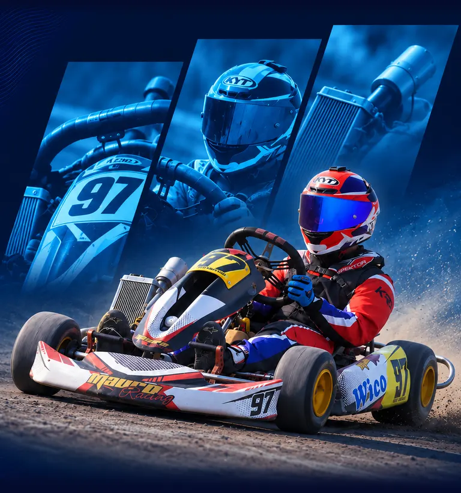
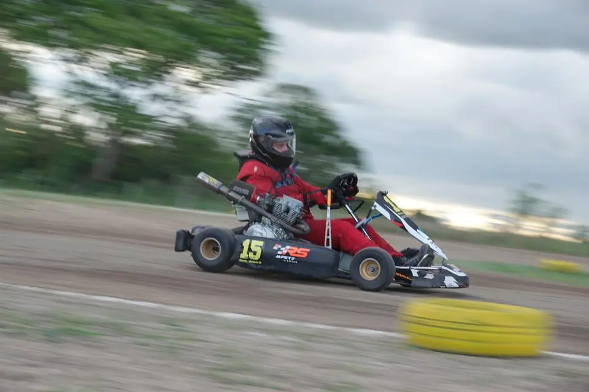

Líder2891 pts
Categoría 01 / 08
Escuela 110
La categoría de iniciación: motores chinos de 107 o 108 cc con caja de 4 marchas y motor precintado.
Lidera tras 5 fechasLautaro Luna+8 ptssobre el 2.º91pts

Próxima fecha
Domingo · 9:00 hs · La Leonesa, Chaco


El kartódromo
Karting en tierra en La Leonesa, Chaco: una comunidad de familias, mecánicos y pilotos que cada fecha llenan la grilla. De la Escuela 110 a las 150 cc, acá se corre en serio.
8 categorías
Categoría 01 / 08
La categoría de iniciación: motores chinos de 107 o 108 cc con caja de 4 marchas y motor precintado.

Categoría 02 / 08
Categoría para pilotos jóvenes, con peso mínimo de 130 kg.

Categoría 03 / 08
Motor 150 cc 4 tiempos varillero, reglamento Multimarcas. Peso mínimo 155 kg.

Categoría 04 / 08
La categoría de los veteranos: 150 cc 4 tiempos, reglamento Multimarcas. Peso mínimo 165 kg.

Categoría 05 / 08
Motor 150 cc 4 tiempos varillero, reglamento Multimarcas. Peso mínimo 170 kg.

Categoría 06 / 08
Motor 150 cc 4 tiempos varillero, reglamento Multimarcas. Peso mínimo 190 kg.

Categoría 07 / 08
La más pesada del reglamento Multimarcas: 150 cc 4 tiempos y peso mínimo de 200 kg.

Categoría 08 / 08
Reglamento Prokart: motor 150 cc 4 tiempos con carburador PZ 27 o PZ 30. Peso mínimo 185 kg.
Tras 5 fechas
Galería
Fecha 5 · Carrera · 18 OCTKart número 30 en plena curvaFecha 5 · Prueba · 18 OCTPiloto con el kart número 15 en boxesFecha 4 · Prueba · 13 SEPDos karts sobre la pista de tierraFecha 4 · Carrera · 13 SEPGrilla de karts lista para largar Fecha 3 · Prueba · 09 AGODetalle de la carrocería de un kart con calcosFecha 3 · Carrera · 09 AGOKart rojo número 45 con piloto de casco verdeFecha 2 · Prueba · 12 JULMecánicos ajustando el kart número 13Fecha 1 · Carrera · 14 JUNParque cerrado bajo las carpas
Fecha 3 · Prueba · 09 AGODetalle de la carrocería de un kart con calcosFecha 3 · Carrera · 09 AGOKart rojo número 45 con piloto de casco verdeFecha 2 · Prueba · 12 JULMecánicos ajustando el kart número 13Fecha 1 · Carrera · 14 JUNParque cerrado bajo las carpasInscribite una sola vez por temporada y tené tu perfil, tu QR y tus fichas listas para cada fecha.